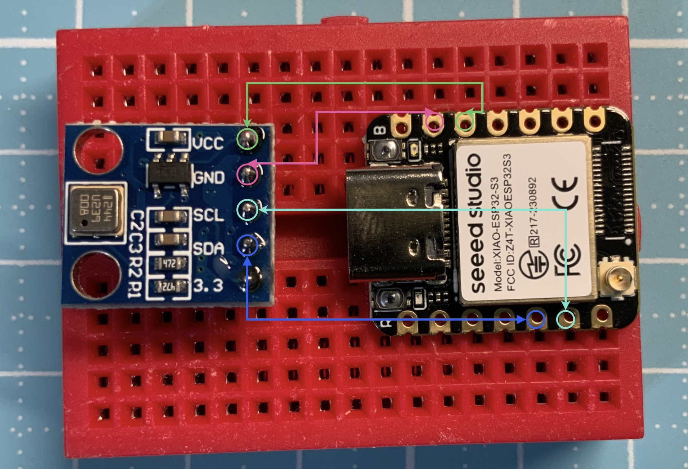

腳位圖

圖片來源：
Seeed Studio 官方文件
接線圖

- 把Esp32插在麵包板左側正中間。
- Esp32的3V3接在模組的VCC。
- Esp32的GND接在模組的GND。
- Esp32的GPIO 5接在模組的SDA。
- Esp32的GPIO 6接在模組的SCL。

GY-68BMP180.py
from machine import I2C, Pin
import time
import ustruct
# === 初始化 I2C ===
i2c = I2C(1, scl=Pin(6), sda=Pin(5), freq=100000)
# BMP180 I2C 位址
BMP180_ADDR = 0x77
# === 讀取校正資料 ===
def read_calibration():
data = i2c.readfrom_mem(BMP180_ADDR, 0xAA, 22)
return ustruct.unpack(">hhhHHhhhhhh", data)
AC1, AC2, AC3, AC4, AC5, AC6, B1, B2, MB, MC, MD = read_calibration()
# === 讀取原始溫度 ===
def read_raw_temp():
i2c.writeto_mem(BMP180_ADDR, 0xF4, b'\x2E')
time.sleep_ms(5)
raw = i2c.readfrom_mem(BMP180_ADDR, 0xF6, 2)
return ustruct.unpack(">H", raw)[0]
# === 讀取原始氣壓 ===
def read_raw_pressure():
i2c.writeto_mem(BMP180_ADDR, 0xF4, b'\x34')
time.sleep_ms(8)
msb = i2c.readfrom_mem(BMP180_ADDR, 0xF6, 1)[0]
lsb = i2c.readfrom_mem(BMP180_ADDR, 0xF7, 1)[0]
xlsb = i2c.readfrom_mem(BMP180_ADDR, 0xF8, 1)[0]
return ((msb << 16) + (lsb << 8) + xlsb) >> 8
# === 計算溫度 ===
UT = read_raw_temp()
X1 = ((UT - AC6) * AC5) >> 15
X2 = (MC << 11) // (X1 + MD)
B5 = X1 + X2
temperature = ((B5 + 8) >> 4) / 10
# === 計算氣壓 ===
UP = read_raw_pressure()
B6 = B5 - 4000
X1 = (B2 * (B6 * B6 >> 12)) >> 11
X2 = (AC2 * B6) >> 11
X3 = X1 + X2
B3 = ((AC1 * 4 + X3) + 2) >> 2
X1 = (AC3 * B6) >> 13
X2 = (B1 * ((B6 * B6) >> 12)) >> 16
X3 = (X1 + X2 + 2) >> 2
B4 = (AC4 * (X3 + 32768)) >> 15
B7 = (UP - B3) * 50000
if B7 < 0x80000000:
pressure = (B7 * 2) // B4
else:
pressure = (B7 // B4) * 2
# === 計算高度 ===
altitude = 44330 * (1 - (pressure / 101325) ** (1 / 5.255))
print("溫度:", temperature, "°C")
print("氣壓:", pressure, "Pa")
print("高度:", altitude, "m")